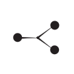

Disambiguating Numeral Sequences to Decipher Ancient Accounting Corpora
Logan Born M. Willis Monroe Kathryn Kelley Anoop Sarkar
&P008141 = MDP 06, 359
#atf: lang qpc
@tablet
@obverse
1. M157 ,
# header
2. M319 |M059+M038~a| M301~ea M002 , 1(N14) 1(N01)# 2(N39B)#
2B. M262#
#line inbetween 02. and 03.
3. M301~eb M002 , 1(N14) 3(N01) 2(N39B)
4. M262~1 M297 , 2(N01) 2(N39B)#?
5. M297~b M002 , 1(N14)
6. M218
#tr.en: (subscript)
$ (scribal design 1 = SDxxxx)
&P008141 = MDP 06, 359
#atf: lang qpc
@tablet
@obverse
1. M157 ,
# header
2. M319 |M059+M038~a| M301~ea M002 , 1(N14) 1(N01)# 2(N39B)#
2B. M262#
#line inbetween 02. and 03.
3. M301~eb M002 , 1(N14) 3(N01) 2(N39B)
4. M262~1 M297 , 2(N01) 2(N39B)#?
5. M297~b M002 , 1(N14)
6. M218
#tr.en: (subscript)
$ (scribal design 1 = SDxxxx)
-
~1600 tablets, most unearthed
at the ancient city of Susa (Iran) - Partially deciphered
-
"Spreadsheets" with alternating spans of
text followed by a numeral
Number Systems
←6
.svg) ←10
←10
.svg) ←6
←10
←2
←6
←10
←2
.svg) ←6
←10
←6
←10
←6
←10
←6
←10
←10 ←2
←6
←10
←6
←10
←3
←10
←6
←5
←2
←3
.svg) ←2
←2
.svg) ←2
←2
.svg)
2
...
9
10
11
2
...
5
6
7
Number Systems
Sexagesimal←6
←10
←6
←10
←2
Decimal
←6
←10
←6
←10
Bisexagesimal
←10 ←2
←6
←10
Capacity
←6
←10
←3
←10
←6
←5
←2
←3
←2
←2
What can we learn about the corpus by analyzing numeral values?
Data
- Extract intact numerals from transliterated corpus1 using regex
- Compute candidate readings using established sign values
1ASCII transliterations courtesy of Cuneiform Digital Library Initiative (CDLI) and Dr. Jacob Dahl
Tablet Summaries
Some documents include a summary line
which sums up the preceding entries:
65
= 22 + 9 + 18 + 16
22
9
18
16
Can disambiguate by searching for combinations
of readings which give a valid sum
Tablet Summaries
24 tablets can be fully or partially disambiguated, e.g. P008014.
- Summary implies that all entries record amounts of M288 in the capacity system
- M288 only occurs in one entry on the obverse
- Long-distance dependency between M288 and the numerals which it "scopes over"
Enables construction of a test set for numeral disambiguation:
Bootstrapping
Yarowsky et al. 1995Uses unambiguous numerals as seed labels to learn a classifier for ambiguous ones:
feature value p(B) p(C) p(D) p(S)
(SAME_ENTRY, M367~B, [0.129464, 0.129464, 0.611607, 0.129464])
Features reflect expert intuitions about possible disambiguating signals:
- Tablet ID, bags of signs from adjacent text, assumed headers/implicit objects, etc
Compare two approaches:
- Baseline: frequency-based cautious rule selection (Collins and Singer 1999)
- Ours: confidence-based cautious rule selection
Vanilla (left) vs. confidence-based rule selection (right):
0.6 F1 vs 0.88 F1
Novel Observations
- M288
associated with larger values than M263
- Larger capacity? Dealt with in bulk?
- Constant ratios:
- Known 2.5 M288 :1 M056~f ratio speculated to represent seed grain per unit area (Damerow & Englund 1989)
- New ratio from this work: M376

capacities exactly 2x as large as M367~i
 capacities
capacities
- M388
associated with larger counts than M124

- Higher status workers? Larger work groups?
- Most tablets don't mix systems
- Those which do only mix capacity measures with one other system.
- Amounts of grain(?) alongside donors/recipients?
In Sum
- Proto-Elamite numerals are challenging to read: most written notations are ambiguous
- Can be disambiguated using additive relations in tablet summaries or by bootstrapping from unambiguous notations
- Novel heuristic for bootstrapping gives 0.88 F1 on manually-vetted test set: accurate enough for initial analyses
- Observe new correlations between number system, magnitude, and text content which add nuance to candidate readings for undeciphered signs